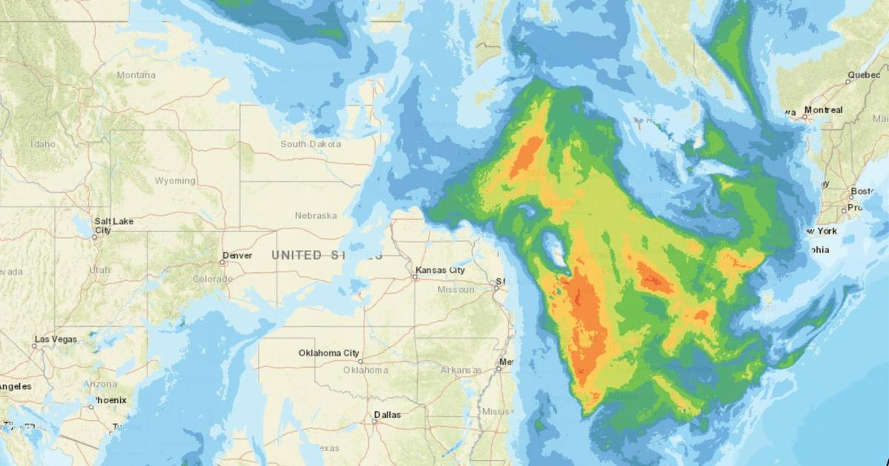

Canadian wildfire smoke causing air quality issues in parts of New EnglandWORCESTER - Parts of New England were under an air quality alert Thursday as continues to affect the United States. The air quality alert was issued for Central Massachusetts, western Massachusetts and Rhode Island until midnight. Hazy skies could also be seen in Boston. "Unfortunately we're not going to see a ton of sunshine today in an otherwise sunny type of situation because of some of the Canadian wildfire smoke," WBZ-TV meteorologist Jacob Wycoff said. The Massachusetts Department of Environmental Protection says air quality is expected to be unhealthy for "sensitive groups," which includes people with heart or lung conditions such as asthma, as well as people who are active outdoors. "MassDEP advises people in sensitive groups to reduce prolonged or heavy outdoor exertion, take more breaks, do less intense activities, follow asthma action plans, and keep quick relief medicine handy," the agency said in a statement. "Watch for symptoms such as coughing or shortness of breath." The Midwest is currently seeing the , with Chicago topping IQAir's global ranking of worst air quality. for more features. |
 |